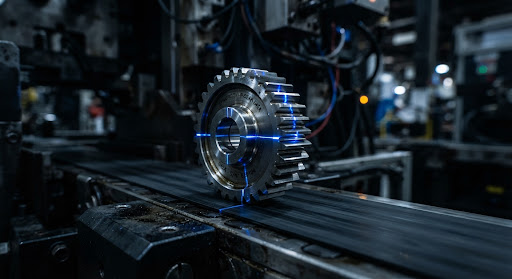
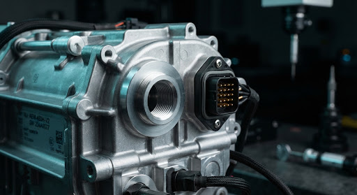
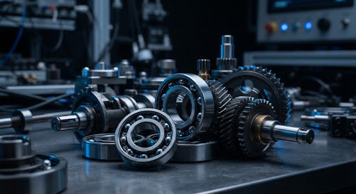
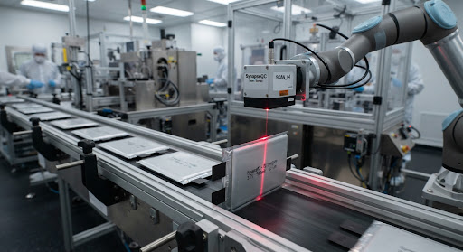
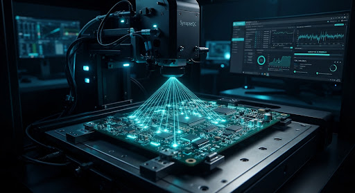

어떤 제조 라인이든
24시간 내 맞춤 구축되는
초경량 피지컬 비전 AI
소량의 정상품·불량품 데이터셋만으로 공장 맞춤형 경량 모델 자동 생성. 카메라 40대 전수 검사, 35ms 초저지연 판정으로 불량 유출 제로(0.01% 이하)를 달성합니다.

왜 기존 비전 검사는 공장 혁신에 실패하는가?
전통 룰베이스 머신비전의 잦은 세팅 변경과 클라우드 비전의 보안·지연 문제를 SynapseQC 엣지 AI가 원천 해결합니다.
품목 교체 & 신규 결함 대응
미세 형상 변경 시 외주 엔지니어 투입 필수. 2~3개월의 캘리브레이션 기간과 수천만원의 유지보수 비용 발생.
정상품 샘플 30장만으로 비지도 학습 개시. 24시간 내 공장 내부에서 자체 자동 경량 모델 컴파일 완료.
데이터 보안 & 생산망 분리
도면 및 신제품 이미지 외부 전송으로 산업 기밀 유출 위험. 인터넷 단절 시 라인 전체 셧다운 및 300ms 네트워크 지연.
외부 인터넷 연결 없는 완벽한 폐쇄망 작동. 사내 현장 GPU 엣지 박스에서 100% 로컬 연산 및 저장.
고속 라인 판정 및 PLC 연동
프레임당 150ms 이상 소요되어 컨베이어 속도를 감속해야 함. 실시간 이젝터 신호 타이밍 불일치로 불량 혼입.
초당 10개 완벽 전수 판정. 50ms 이내 미쓰비시/지멘스 PLC와 직결되어 불량품 실린더 즉시 분기 배출.
다품종 소량 생산 라인을 위한 3-Step 맞춤 파이프라인
숙련된 AI 연구 인력 없이도, 현장 엔지니어가 데이터 등록부터 PLC 하드웨어 연동까지 하루 안에 완료합니다.
소량 데이터셋 즉각 등록
수만 장의 학습 이미지가 필요 없습니다. 정상품 20~50장과 소량의 불량 샘플만으로 비지도 이상치 탐지(PatchCore) 및 3D 물리적 텍스처 증강을 자동 실행합니다.
24시간 무중단 경량 AutoML
최적의 합성신경망을 자체 탐색해 100MB 이하 INT8 경량 엔진으로 정량화 컴파일. 현장 사내 서버에서 클라우드 연결 없이 12시간 내 학습 및 최적화를 완결합니다.
현장 엣지 배포 및 PLC 연동
사내 네트워크로 10~40대 산업용 PC에 원클릭 무중단 배포. Modbus / CC-Link / Profinet 프로토콜로 에어 블로워 및 리젝트 실린더를 35ms 내 제어합니다.
국내 유수 제조 현장에서 검증된 부품 영역

자동차 전장 & EV 모터 하우징
알루미늄 다이캐스팅 기포, 결합 핀 휨, 0.05mm 미세 스크래치, 가공 잔여 버(Burr) 전수 검출.

정밀 기계 · 베어링 & 기어
유류 얼룩 오염, 궤도면 피팅(Pitting), 치형 결손, 압입 깊이 조립 공차 마이크로 판정.

2차전지 · 파우치 및 각형 배터리
파우치 실링 주름, 전극 탭 정렬 불량, 표면 절연 필름 찍힘, 미세 금속 이물 유입 검사.

반도체 & PCB 표면 실장(SMT)
솔더 브릿지, 냉납, 칩 미삽·오삽, 패턴 단선 및 회로 박리 현상 100% 비접촉 검출.
경영진과 공장장이 확신하는 측정 가능한 ROI
단순 가설이 아닌 실제 14개 라인 양산 적용 후 집계된 경제적 지표입니다.
3교대 육안 전수 검사 인력 6명의 피로 누적 재배치(인건비 2.4억원 절감)와 해외 고객사 불량 유출 클레임 및 리콜 선제 차단(연평균 0.8억원 손실 방지).
하드웨어 및 온프레미스 AI 셋업 비용을 7개월 이내 전액 상쇄하여 빠른 BEP를 실현합니다.
대용량 이미지 전송 트래픽 비용 및 지속적인 SaaS API 과금 없이 영구 사내 라이선스로 운영됩니다.
귀사 실제 부품 샘플로 AI 판정 정확도를 무료 검증하세요
샘플 부품 이미지 30장을 보내주시면, 익일 오후 정밀 결함 검출 보고서와 추론 속도 시뮬레이션 결과를 무상 제공합니다.